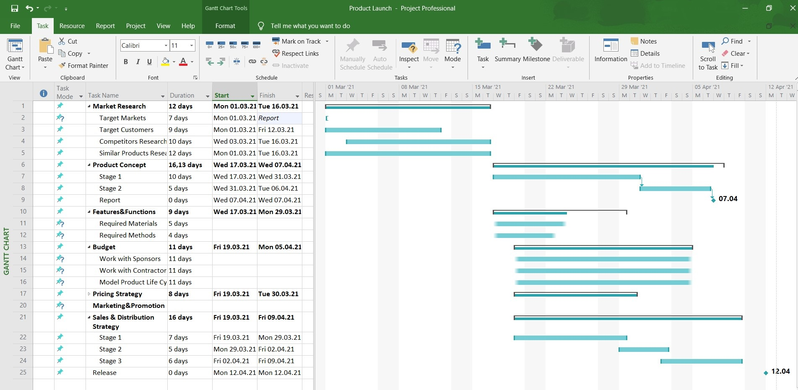

Microsoft Project
Ajalugu
Microsoft Project loodi Microsofti poolt ja avaldati esmakordselt 1984. aastal, algselt DOS-i jaoks. See oli üks esimesi projektihalduse tarkvaratooteid personaalarvutitele. Tööriist loodi selleks, et aidata projektijuhtidel projekte tõhusamalt planeerida, jälgida ja hallata. Arendus on jätkunud tänaseni ning nüüd on see saadaval nii töölauarakenduse kui ka pilveteenusena (Microsoft Project Online).
Peamised funktsioonid
- 📅 Gantti diagrammid — projekti ajakavade ja ülesannete sõltuvuste visualiseerimine
- 👥 Ressursihaldus — meeskonnaliikmete ja nende töökoormuse määramine ja jälgimine
- 📊 Aruandlus — sisseehitatud aruanded edenemise, kulude ja tulemuslikkuse kohta
- 🔗 Microsoft 365 integratsioon — töötab koos Teams, Excel ja SharePoint rakendustega
- ☁️ Pilvejuurdepääs — saadaval veebis Microsoft Project Online kaudu
Ekraanipildid


Microsoft Project on endiselt üks enim kasutatavaid projektihalduse tööriistu maailmas, eriti suurettevõtetes. See toetab nii Waterfall kui ka Agile metoodikaid, muutes selle mitmekülgseks erinevat tüüpi projektide jaoks.
Tehtud: Artjom Põldsaar